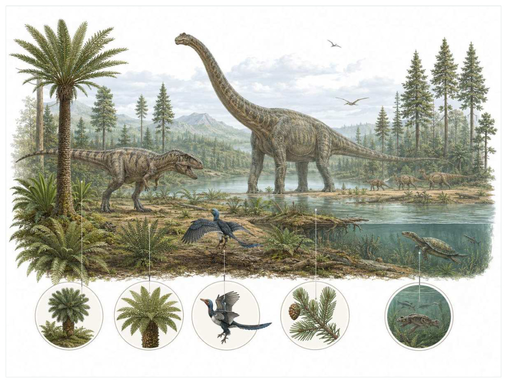

第12篇 · 侏罗纪：巨型恐龙与成熟中生代生态 · 第 40 章
侏罗纪森林：把巨型恐龙放回完整生态系统
本篇主题:侏罗纪：巨型恐龙与成熟中生代生态
大型蜥脚类、兽脚类、翼龙、海洋爬行动物和小型哺乳动物共同构成完整世界。

本章科学复原配图 （用于呈现结构与生态关系, 不替代化石照片、测量数据与系统发育证据。）
这一章进入约2.01亿至1.45亿年前。没有任何生物预知下一时代，所有性状都只能在当时的资源、天敌和繁殖条件下接受筛选。侏罗纪陆地不是一张摆满恐龙模型的空地。针叶树、苏铁、银杏、树蕨和低矮蕨类构成植物层次，昆虫负责分解、植食和早期传粉，河流中有鱼、龟与鳄形类，夜间和地下生活着小型哺乳形类。蜥脚类把植物生产转化为巨大动物量，剑龙和鸟脚类利用不同高度植物，兽脚类则在猎物尺寸和捕猎方式上分化。
进入这个时代
生态系统的真实声音不是巨兽咆哮，而是持续的摄食、分解、搬运和繁殖。每一具尸体、每一层落叶和每一次沉积扰动都会重新分配资源。晨雾穿过南洋杉状树冠，梁龙群沿开阔河漫滩移动，低矮植被被不断取食和踩踏；剑龙在林缘寻找较低枝叶，小型鸟脚类迅速穿过灌木。异特龙并非一直追逐最大猎物，它也会利用幼体、尸体和中型动物。天空有翼龙，水道里有鳄形类和淡水鱼。
在“侏罗纪森林：把巨型恐龙放回完整生态系统”所覆盖的时间里，不能把地理与气候当作固定背景。海陆位置、海平面、河流或植被结构会改变资源可达性，同一性状在不同地区可能得到完全相反的选择结果。
以侏罗纪森林：把巨型恐龙放回完整生态系统为例，亲缘与外形不能混为一谈。相似身体可能来自共同祖先，也可能来自趋同；过渡类型也不是两类动物的机械拼接，而是当时能够正常摄食、运动和繁殖的完整生物。 在本章中，这一约束具体落在“蜥脚类的高位与广幅取食重塑植物结构”这条关系上。
再从约2.01亿至1.45亿年前的时间尺度看，演化的单位是种群而不是单个英雄。个体结构影响生存，但地理分布、繁殖速度、幼体死亡率和种群规模决定变异能否保留下来。化石中最醒目的成年骨架，未必是决定支系命运的阶段。 它与“成熟的多层陆地食物网”共同决定了后续变化可以沿哪些路径发生。
生态系统如何运转
理解“蜥脚类的高位与广幅取食重塑植物结构”需要区分个体事件与长期压力。偶然一次捕食只改变个体命运，持续数千代的稳定关系才可能推动牙齿、外壳、感觉器官或生活史发生方向性变化。
围绕“蜥脚类的高位与广幅取食重塑植物结构”，这种关系没有永恒赢家。收益随密度和环境改变：防御越常见，攻击专门化的价值越高；资源越稀少，维持昂贵结构的代价越大。化石记录中的扩张与衰退，常是这种动态平衡被外部事件打破的结果。对侏罗纪森林：把巨型恐龙放回完整生态系统而言，这一后果还会与“不同植食动物按高度、口部和消化方式分割资源”相互放大或抵消。
“不同植食动物按高度、口部和消化方式分割资源”还会改变可利用空间。一个支系若能进入新的水深、植被高度或沉积层，竞争会暂时减弱；随后追随者、捕食者和寄生者又会把新空间变成新的互动网络。
围绕“不同植食动物按高度、口部和消化方式分割资源”，它的长期后果通常通过幼体和繁殖体现。成年个体即使能抵抗一次危机，只要巢址、配子、幼体食物或成长季节被破坏，种群仍会在数代内下降。 对侏罗纪森林：把巨型恐龙放回完整生态系统而言，这一后果还会与“尸体、粪便和倒木为分解者与小型动物提供巨大能量脉冲”相互放大或抵消。
把“尸体、粪便和倒木为分解者与小型动物提供巨大能量脉冲”放进食物网，可以看到它不是孤立行为。它会影响种群密度、栖息地使用和尸体进入分解链的速度，并把后果传给并未直接参与互动的物种。
围绕“尸体、粪便和倒木为分解者与小型动物提供巨大能量脉冲”，还要考虑空间异质性。一项在浅海、河谷或林冠有效的策略，移到深水、干旱内陆或开阔地便可能失去优势。因此同一支系常出现区域性扩张，而不是全球同步取代。对侏罗纪森林：把巨型恐龙放回完整生态系统而言，这一后果还会与“蜥脚类的高位与广幅取食重塑植物结构”相互放大或抵消。
关键演化创新
在“侏罗纪森林：把巨型恐龙放回完整生态系统”中，围绕“成熟的多层陆地食物网”，这一结构的历史应按性状拆开。支撑、感觉、供能和控制往往不是同时成熟，化石会显示镶嵌状态：某一部分已接近后来的形态，其他部分仍保留祖征。 它首先需要在约2.01亿至1.45亿年前的生态条件下产生可测量收益。
就“成熟的多层陆地食物网”而言，化石能较可靠地记录硬组织形态，却很少直接保留基因调控与短时行为。因此结构出现通常可信，最初用途和选择路径则应按证据标为主流解释或合理推测。 本章把它与“巨型植食者生态工程”并列，是为了显示复杂性状往往依赖多部分协同。
在“侏罗纪森林：把巨型恐龙放回完整生态系统”中，围绕“巨型植食者生态工程”，“巨型植食者生态工程”是本章的重要演化创新。创新并不等于某一代突然长出完整器官，它通常由旧结构的尺寸、连接、材料和表达时序逐步变化，并在每个中间阶段承担可用功能。 它首先需要在约2.01亿至1.45亿年前的生态条件下产生可测量收益。
就“巨型植食者生态工程”而言，其宏观影响往往滞后于结构起源。一个创新可以先在小型、稀少支系中存在数百万年，直到环境变化或竞争者灭绝后才迅速扩张；“出现”和“成为主导”是两个不同事件。 本章把它与“植物-昆虫-脊椎动物物质循环”并列，是为了显示复杂性状往往依赖多部分协同。
在“侏罗纪森林：把巨型恐龙放回完整生态系统”中，围绕“植物-昆虫-脊椎动物物质循环”，这一结构的历史应按性状拆开。支撑、感觉、供能和控制往往不是同时成熟，化石会显示镶嵌状态：某一部分已接近后来的形态，其他部分仍保留祖征。它首先需要在约2.01亿至1.45亿年前的生态条件下产生可测量收益。
就“植物-昆虫-脊椎动物物质循环”而言，这也提醒我们不要寻找单一关键基因。复杂性状由多个组织和调控网络协调，改变任何一环都可能产生不同结果，演化路径因此呈树状而非直线。 本章把它与“成熟的多层陆地食物网”并列，是为了显示复杂性状往往依赖多部分协同。
生命群像：把物种放回生态网络
梁龙（Diplodocus carnegii）
梁龙（Diplodocus carnegii）是晚侏罗世的一名真实生态成员，而不是通往后代的抽象过渡。它约有约24至27米，体重常估十余吨，以高产量低位或中位浏览植食者的方式获取资源；极长尾、细长颈和替换迅速的铅笔状牙齿适合大范围采食反映了其祖先历史与局部选择压力共同留下的结果。
对梁龙而言，它既可能是捕食者、植食者或工程者，也同时是其他生物的猎物、竞争者和分解资源。一次取食只是一瞬，长期生态影响来自成千上万个体反复搬运营养、改变植被或扰动沉积物。体型越大，这种工程效应通常越明显，但恢复速度也常越慢。 这使“极长尾、细长颈和替换迅速的铅笔状牙齿适合大范围采食”不能脱离其高产量低位或中位浏览植食者角色来理解。
判断它的生活方式时，研究者首先使用完整骨架和牙齿微磨损约束体型与食性，颈姿势仍有活动范围讨论。随后会检验替代解释：同样的牙是否也能处理其他食物，同样的骨骼比例是否由年龄造成，同一骨层是否来自群体生活还是灾难性聚集。排除过程比贴标签更重要。
由梁龙这个案例看，过去的复原常受完整现代动物模板影响，新材料则迫使研究者接受更陌生的身体比例或生活方式。最稳妥的表达是保留估计区间，并明确哪些软组织、颜色和社会行为仍属合理推测。 它在晚侏罗世留下的记录，因此同时是第40章所讨论的形态史和生态史的一部分。
腕龙（Brachiosaurus altithorax）
若把镜头从时代拉近到个体，腕龙（Brachiosaurusaltithorax）会首先进入视野。它生活于晚侏罗世，体型约约18至22米，数十吨级。作为高位浏览大型植食者，它依靠前肢长于后肢、肩部高和长颈有利于取食树冠与环境和其他生物发生关系。
对腕龙而言，成年体型往往主导复原，但幼体可能使用完全不同的食物和栖息地。若成长阶段跨越多个生态位，种群就同时依赖多套环境；其中任一环节中断都可能导致长期衰退。化石骨床的年龄结构因此比单具最大标本更能说明生态。 这使“前肢长于后肢、肩部高和长颈有利于取食树冠”不能脱离其高位浏览大型植食者角色来理解。
关于它的直接依据是：骨架比例高可信，是否长期高抬颈部需结合关节与血压模型。研究者还必须确认骨骼是否属于同一个体、是否被水流搬运、压扁是否改变比例，以及不同大小是否只是成长阶段。只有解剖、地层和功能证据相互一致，复原才可上调为高可信。
由腕龙这个案例看，它在生命史中的价值不在于离现代形态还有多远，而在于证明这一身体组合曾真实可行。即使没有直系后代，支系也可能在当时持续繁盛，并通过捕食、植食或栖息地工程改变其他生命的选择环境。 它在晚侏罗世留下的记录，因此同时是第40章所讨论的形态史和生态史的一部分。
剑龙（Stegosaurus stenops）
剑龙（Stegosaurus stenops）存在于晚侏罗世。现有材料显示其大小约约6至7米，生态位置接近低位植食装甲恐龙。背板可能参与展示和体温交换，尾刺提供主动防御让它成为理解本章主题的合适案例，但不意味着同一类群所有成员都采用相同策略。
对剑龙而言，这种生活方式还会反向塑造环境。摄食改变植物或猎物结构，足迹和掘穴改变沉积，尸体和排泄物把营养集中到局部。生态位不是它进入的固定房间，而是它与其他生物共同建造并持续修改的关系网络。 这使“背板可能参与展示和体温交换，尾刺提供主动防御”不能脱离其低位植食装甲恐龙角色来理解。
现有认识建立在尾椎损伤和捕食者骨骼穿刺支持尾刺防御；背板功能可能多重之上。古生物学的可信度不是来自一件戏剧化标本，而是来自多件标本、多个地点和不同方法得到相容结果。新发现若改变比例或分类，并非此前研究毫无价值，而是证据边界被重新画清。
由剑龙这个案例看，从生态尺度看，它与本章其他成员共同维持一张网络。任何“最强”排名都会遗漏资源供应、幼体死亡、疾病和气候脉冲；真正决定长期成功的是种群能否在波动中不断完成繁殖。 它在晚侏罗世留下的记录，因此同时是第40章所讨论的形态史和生态史的一部分。
异特龙（Allosaurus fragilis）
在晚侏罗世，异特龙（Allosaurus fragilis）以约约8至10米的身体参与食物网。它不是孤立的“明星生物”，而是大型陆地捕食者与食腐者；较轻头骨、锯齿牙和强壮前肢适合切割猎物决定它能利用哪些资源，也决定必须承担哪些成本。
对异特龙而言，相似环境可能让远亲出现相近轮廓，但内部结构会保留祖先限制。比较它与现代类比时，应只借用可检验的功能，不把现代动物的行为、社会制度或代谢水平整套复制到古生物身上。 这使“较轻头骨、锯齿牙和强壮前肢适合切割猎物”不能脱离其大型陆地捕食者与食腐者角色来理解。
支持该解释的材料包括咬痕、病理与骨床提供生态线索；所谓群猎没有决定性证据。若不同证据出现冲突，应优先报告范围而不是强行给出单值。例如体长会随参照类群变化，运动能力会随软组织假设变化，系统位置也会随新增性状重新计算。
由异特龙这个案例看，它也展示专门化的双面性：结构在稳定环境中提高效率，却可能在气候、食物或竞争格局突变时限制转向。灭绝不是对设计的道德评分，而是性状、地理范围和偶然事件相遇后的历史结果。 它在晚侏罗世留下的记录，因此同时是第40章所讨论的形态史和生态史的一部分。
奥斯尼尔龙（Othnielosaurus consors）
认识奥斯尼尔龙（Othnielosaurus consors）要先放弃静态骨架印象。它生活在晚侏罗世，约约2米，日常任务是作为小型快速植食或杂食恐龙维持能量与繁殖。轻巧后肢和小体型代表常被巨型恐龙叙事忽视的地表成员只是这一整套生活史中最容易化石化的部分。
对奥斯尼尔龙而言，它既可能是捕食者、植食者或工程者，也同时是其他生物的猎物、竞争者和分解资源。一次取食只是一瞬，长期生态影响来自成千上万个体反复搬运营养、改变植被或扰动沉积物。体型越大，这种工程效应通常越明显，但恢复速度也常越慢。 这使“轻巧后肢和小体型代表常被巨型恐龙叙事忽视的地表成员”不能脱离其小型快速植食或杂食恐龙角色来理解。
我们之所以能够作出上述判断，主要因为骨骼显示敏捷运动，食性由牙齿和近亲推断。单一结构通常有多种功能解释，所以还要查看磨损、病理、肌肉附着、沉积环境和近缘比较。计算模型能排除不可能姿势，却不能自动恢复没有保存的软组织。
由奥斯尼尔龙这个案例看，面对仍有争议的细节，负责任的复原不是停止讲述，而是标注证据等级。形态、年代和亲缘可较确定，具体姿势、叫声、求偶和群猎则按材料降级；新标本会在这些边界内继续改写认识。 它在晚侏罗世留下的记录，因此同时是第40章所讨论的形态史和生态史的一部分。
因果链：环境、生态与性状
种群层面的成功还要考虑波动，而不仅是平均状态。在资源丰富年份，“巨型植食者生态工程”带来的高性能可能迅速增加个体数；在低谷年份，维持该结构的成本又会放大死亡。若腕龙拥有较广食谱或可迁移，便可能跨过低谷；若其前肢长于后肢、肩部高和长颈有利于取食树冠高度依赖单一环境，恢复就更困难。化石群落中的丰度峰值、体型变化和地理收缩能为这种“繁荣—压力—恢复”循环提供线索，但必须与采样偏差区分。对约2.01亿至1.45亿年前的任何稳态描述，都只是长期波动中被岩层保存的一小段。
本章的因果链最终落在繁殖上。“不同植食动物按高度、口部和消化方式分割资源”改变个体获得资源和避开风险的方式，“成熟的多层陆地食物网”改变身体能做什么，但只有这些差异持续影响配子、胚胎、幼体和成体留下后代的概率，演化频率才会跨世代变化。梁龙和腕龙的化石常让人关注尺寸或武器，然而巢、蛋、芽孢、孢粉、幼体壳和成长线往往更接近选择真正发生的位置。理解侏罗纪森林：把巨型恐龙放回完整生态系统，因此要把最壮观的成年结构重新接回完整生活史。
把“成熟的多层陆地食物网”拆成成本与收益，可以避免把演化创新写成无条件升级。它可能扩大摄食、运动或繁殖的边界，却要付出组织材料、发育协调和日常维持的代价；“巨型植食者生态工程”又会改变这笔账在不同生命阶段的分配。对梁龙而言，极长尾、细长颈和替换迅速的铅笔状牙齿适合大范围采食在成年阶段或许十分醒目，但种群能否延续仍取决于幼体是否能找到食物、是否有安全的生长场所以及环境波动后是否保留繁殖者。化石往往偏爱成年硬组织，因此书写约2.01亿至1.45亿年前时必须主动补上这些不易保存却决定长期命运的环节。
从时间顺序看，“成熟的多层陆地食物网”的最早记录不等于它立即改写生态系统。结构可能先以小幅变异出现在稀少支系中，经历很长的试验期，直到“蜥脚类的高位与广幅取食重塑植物结构”所代表的资源条件或竞争格局改变，才出现可见的辐射。反过来，一个支系在化石记录中突然繁盛，也不证明关键结构刚刚产生；保存窗口打开、地理扩散或生态位释放都能造成类似图景。因此讨论约2.01亿至1.45亿年前的创新时，本章把“首次出现”“功能完善”“多样化”和“成为生态主导”分成四个问题，避免用一个日期替代整段历史。
在约2.01亿至1.45亿年前，身体不是若干部件的简单相加。“成熟的多层陆地食物网”只有与“植物-昆虫-脊椎动物物质循环”在供能、控制和发育上兼容，才可能稳定遗传；局部性能提高若超过呼吸、循环或支撑能力，整体反而失效。剑龙的背板可能参与展示和体温交换，尾刺提供主动防御因此应放进完整身体比例中解释，而不是把某一器官单独夸大。生物力学模型可以估算受力和运动范围，组织学能限制生长速度，近缘比较能提示同源关系；三者相互校验，才有可能从静态化石走向一个能够活着完成日常活动的动物或植物。
时代横截面：个体、种群与证据
证据强度也应逐句区分。莫里逊组等骨层与沉积相重建栖息地若直接记录形态或行为痕迹，可把某些可能性排除；牙齿磨损和颈部活动范围约束取食高度若来自模型或现代类比，则通常提供范围而非唯一答案。对剑龙的背板可能参与展示和体温交换，尾刺提供主动防御，我们也许能高可信地描述结构，却只能以主流解释讨论功能，以合理推测讨论日常行为。把层级写出来不会削弱故事，反而让读者知道未来新发现最可能改动哪一部分。
把结构看作模块，可以解释为什么过渡类型常显得“新旧并存”。梁龙的极长尾、细长颈和替换迅速的铅笔状牙齿适合大范围采食可能已经接近后来状态，而呼吸、繁殖或运动的其他部分仍保留祖征；腕龙可能采用另一种组合达到相似功能。演化不要求所有部件同步改变，只要求每个阶段的完整个体能够生活和繁殖。正因如此，真实谱系会产生旁支、回退和多次独立试验，而不是教科书式直梯。
再把剑龙加入横截面，群落关系会从两者比较变成网络。它作为低位植食装甲恐龙，通过背板可能参与展示和体温交换，尾刺提供主动防御连接资源与其他消费者；其数量变化可能同时影响梁龙和腕龙，甚至改变分解链和营养循环。这样的间接效应很少能由一具骨架直接证明，却可以从物种共现、丰度、痕迹化石和环境指标中受到约束。侏罗纪森林：把巨型恐龙放回完整生态系统的生态复原因此需要群落数据，而不只是著名标本的精细解剖。
地理同样会拆散看似整齐的时代标签。约2.01亿至1.45亿年前并不是全球同时拥有同一种气候与群落：海盆深浅、纬度、山脉、河流和大陆隔离会让梁龙、腕龙与剑龙的分布错开。一个支系可能在某地区衰退、在另一地区成为避难所；后来扩散又会造成化石记录中的“重新出现”。因此本章的代表物种用于说明机制，而不意味着它们都在同一地点同一时刻相遇。
“谁取代了谁”常把复杂过程压成单线叙事。在侏罗纪森林：把巨型恐龙放回完整生态系统中，即使腕龙在某层位后减少、剑龙随后增加，也可能是二者分别响应气候或栖息地，而不是直接竞争导致淘汰。需要检查时间误差、地理重叠和资源相似度；只有三者都支持，替代关系才更可信。更多时候，生态系统通过功能重新组合过渡，旧支系与新支系会长期并存。
科学家为什么这样判断
“莫里逊组等骨层与沉积相重建栖息地”还需要与年代学绑定。只有事件先后关系可靠，才能讨论因果；若环境变化和生物响应的误差范围大量重叠，就应表述为相关或可能机制，而不是宣布已经证明。
“牙齿磨损和颈部活动范围约束取食高度”最有价值的地方，是它能排除某些流行复原。关节不允许的姿势、承重无法支持的速度、与沉积环境冲突的生活方式，都可以被证据淘汰；剩余模型仍可能不止一个。
“足迹、粪化石和骨骼咬痕连接食物网”提供的是一类约束而非完整录像。它可能精确记录某一瞬间，却未必代表全年或整个物种；也可能反映长期平均，却无法指出单次行为。把不同时间尺度的证据组合，才能重建生态过程。
在“侏罗纪森林：把巨型恐龙放回完整生态系统”这一问题上，把上述方法合在一起，研究者才能从残缺材料走向受约束的复原。任何一条证据都可能受到成岩、污染、样本量或现代类比的限制；结论越具体，越需要多条独立证据指向同一方向，并与约2.01亿至1.45亿年前的地层背景相容。
过去的图景与今天的证据
‘侏罗纪全球温暖且到处是热带丛林’过于统一。高纬度有明显季节性，不同盆地从湿润森林到半干旱泛滥平原差别很大。群居和迁徙常由足迹或年龄结构支持，但大规模队列式迁徙并非每个蜥脚类都能确认。
围绕“侏罗纪森林：把巨型恐龙放回完整生态系统”，旧复原并不总是彻底错误。它可能正确抓住亲缘或基本功能，却在姿势、比例和生态上被新标本修订。比较“过去认为”和“现在更支持”，能看见证据如何逐层替换想象。
对约2.01亿至1.45亿年前的材料而言，这里的争论并非一方相信科学、另一方拒绝科学，而是不同材料对模型的约束力度不同。旧结论可能建立在少量标本或错误现代类比上，新技术增加性状后会改变最合理解释。修正是研究正常运行的结果。
跨尺度观察
灭绝选择性：危机不会随机删除名单。分布狭窄、食性单一、体型大、成熟慢或依赖特定栖息地的支系往往风险更高，但每次事件的杀伤机制不同，规律只能作为概率而非绝对法则。 在“侏罗纪森林：把巨型恐龙放回完整生态系统”中，这一尺度具体连接了“蜥脚类的高位与广幅取食重塑植物结构”与“成熟的多层陆地食物网”，因而不能只从单个成年标本判断。
恢复不是复原：大灭绝后的多样性回升并不意味着旧生态返回。幸存者会以新组合接管功能，某些空缺可能数百万年无人填补，另一些由远亲迅速占据。恢复速度应分别看物种数、身体大小和食物网复杂度。 在“侏罗纪森林：把巨型恐龙放回完整生态系统”中，这一尺度具体连接了“不同植食动物按高度、口部和消化方式分割资源”与“巨型植食者生态工程”，因而不能只从单个成年标本判断。
空间镶嵌：同一地质时期包含多个大陆、纬度和海盆。地区之间可因山脉、海峡和洋流形成不同群落，局部化石库不能代表全球平均。比较多个地点能区分真正的全球事件与区域替换。 在“侏罗纪森林：把巨型恐龙放回完整生态系统”中，这一尺度具体连接了“尸体、粪便和倒木为分解者与小型动物提供巨大能量脉冲”与“植物-昆虫-脊椎动物物质循环”，因而不能只从单个成年标本判断。
通向下一个时代
从本章走向下一阶段时，需要保留的不是一串物种名，而是一个因果链：环境改变可用能量与栖息地，生态关系筛选性状，性状又反过来改造环境。在这个系统中，蜥脚类为何能达到数十吨成为关键问题。答案涉及气囊、骨骼轻量化、长颈、不咀嚼、卵生和快速生长的组合，而不是简单的‘食物很多’。
本章精选来源
- [R64] Sander, P. M. et al. Biology of the sauropod dinosaurs: the evolution of gigantism. Biological Reviews 86, 117-155 (2011).
- [R65] Wedel, M. J. Vertebral pneumaticity, air sacs, and the physiology of sauropod dinosaurs. Paleobiology 29, 243-255 (2003).
- [R66] Benson, R. B. J. et al. Rates of dinosaur body mass evolution indicate 170 million years of sustained ecological innovation on the avian stem lineage. PLoS Biology 12, e1001853 (2014).
- [R67] Barrett, P. M. Paleobiology of herbivorous dinosaurs. Annual Review of Earth and Planetary Sciences 42, 207-230 (2014).
- [R68] Xu, X. et al. An integrative approach to understanding bird origins. Science 346, 1253293 (2014).